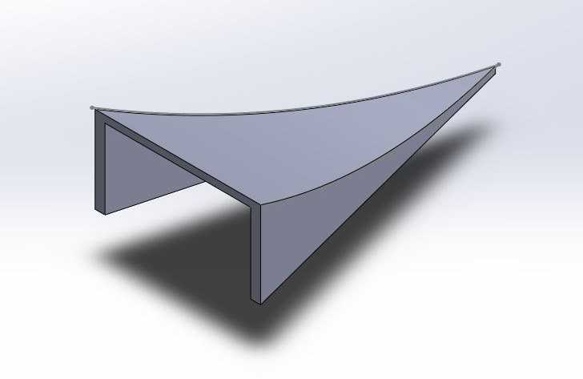

<topbar style="display:none;">
<item><a href="../index.html">Home</a></item>
<item><a href="../about.html">About</a></item>
</topbar>
<!-- This is a comment, it is ignored by the compiler/interpreter -->
# Week 11
<div></div>
## Overview
<div></div>
This week I attempted to complete the first test assembly of the reflector with all 4 rings. I fixed each in place with hot glue, and took a timelapse of the construction shown below.
<iframe width="560" height="315" src="https://www.youtube.com/embed/mApJgXV4NYs" title="YouTube video player" frameborder="0" allow="accelerometer; autoplay; clipboard-write; encrypted-media; gyroscope; picture-in-picture" allowfullscreen></iframe>
The assembly seemed to focus light fairly well, but the support structure was ultimately too flexible and the hot glue too weak a bond for this to be a useable prototype attached to the final assembly. I also needed to add the central hole, so the reflectors were removed and a hexagonal hole was cut in the center for light to pass through the dish. To make the reflector less flexible and provide mounting points to the final assembly, I attached wooden supports to the back of the plate.
I also designed and printed parts for the secondary reflector this week, making a 4 inch outer diameter parabolic reflector with a focal length of 2 inches. The reflector started as a parabolic profile, and was extruded into a flat parabolic sheet:
<center></center>
The sheet was patterned 12 times in a circle, with the intersections between each parabolic sheet used to provide a cut angle. This approximated a three-dimensional parabola with surfaces of curvature along a single axis, allowing for mylar to be laid on each segment without the need for stretching. Legs were extended downwards, and a 0.5mm tolerance was added for the eventual 3D print. A 2D profile was drafted for the mylar by flattening the surface of the sections.
<right></right>
<center></center>